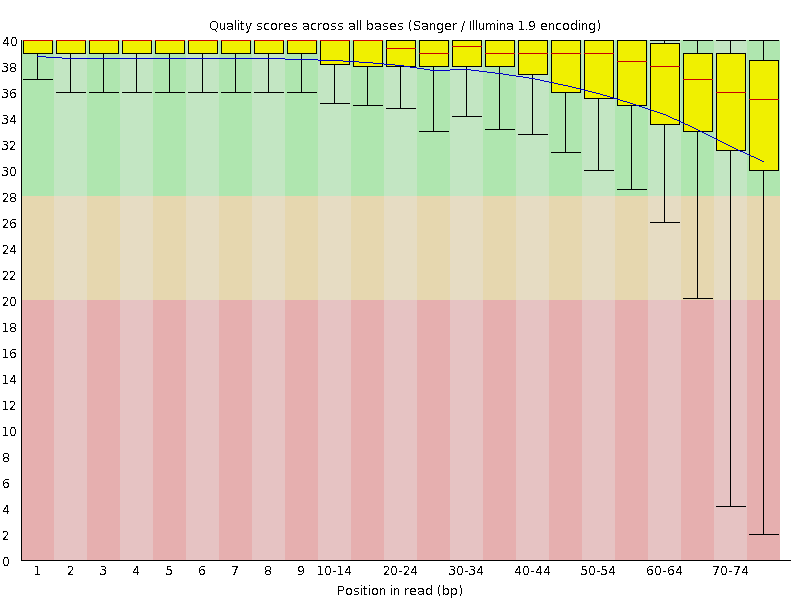
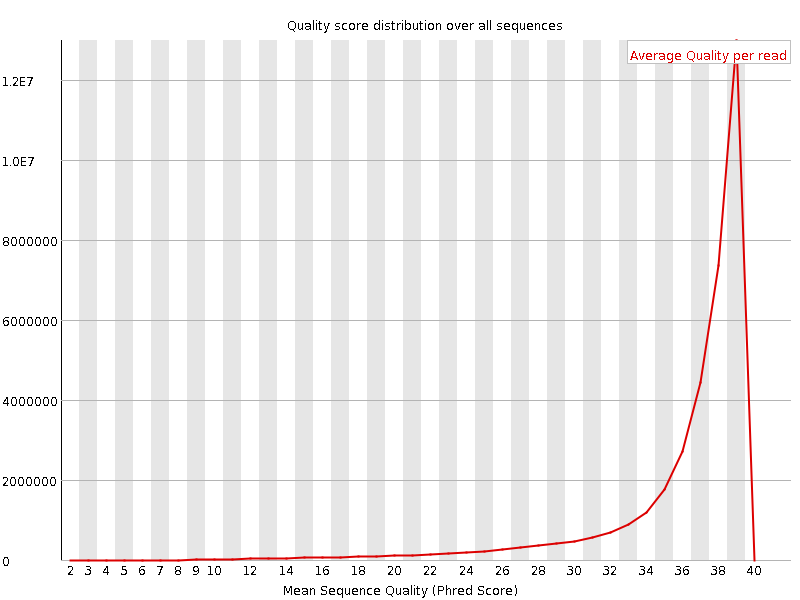
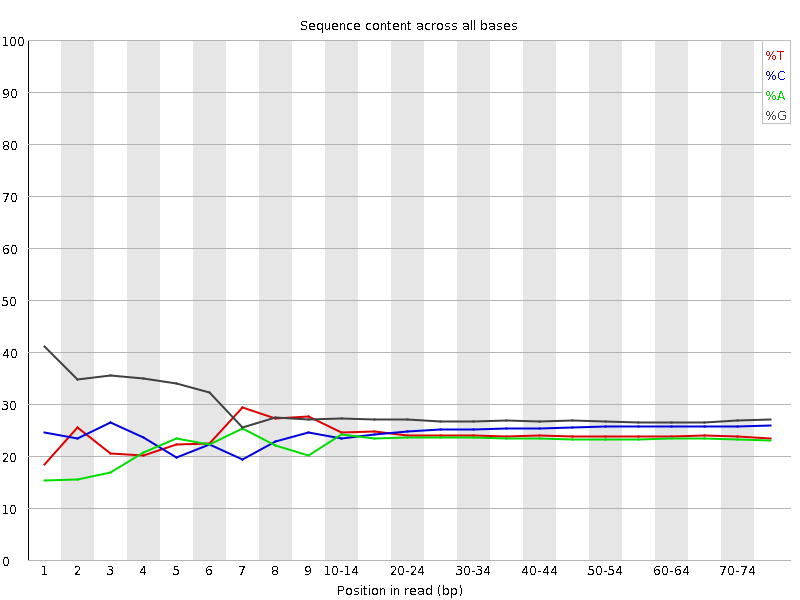
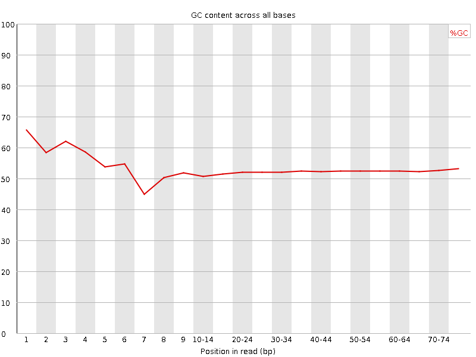
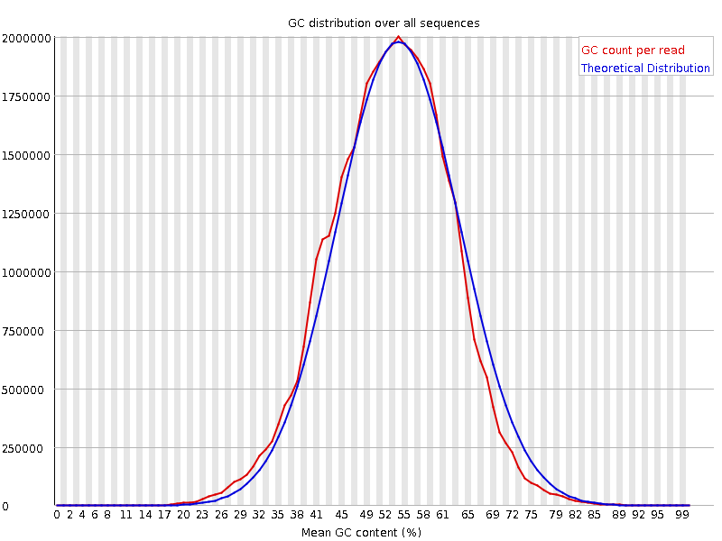
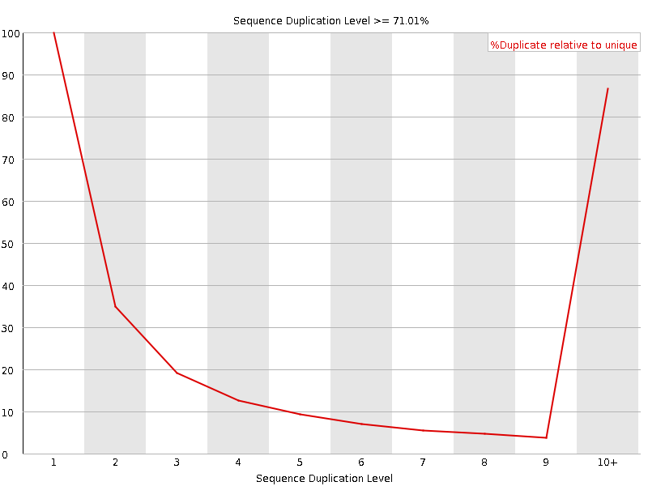
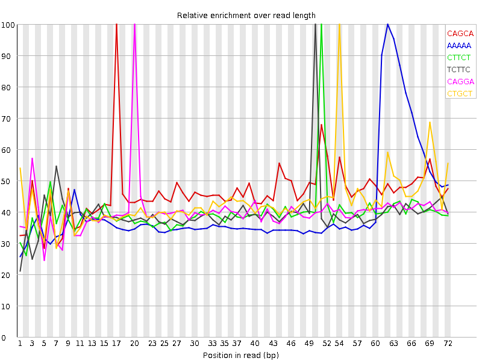

![[OK]](Icons/tick.png) Basic Statistics
Basic Statistics
| Measure | Value |
|---|---|
| Filename | SRR307900_1.fastq |
| File type | Conventional base calls |
| Encoding | Sanger / Illumina 1.9 |
| Total Sequences | 36579635 |
| Filtered Sequences | 0 |
| Sequence length | 76 |
| %GC | 52 |
Per base sequence quality

Per sequence quality scores

![[FAIL]](Icons/error.png) Per base sequence content
Per base sequence content

Per base GC content

Per sequence GC content

Per base N content

Sequence Length Distribution

Sequence Duplication Levels

![[WARN]](Icons/warning.png) Overrepresented sequences
Overrepresented sequences
| Sequence | Count | Percentage | Possible Source |
|---|---|---|---|
| GATCGGAAGAGCGGTTCAGCAGGAATGCCGAGACCGATATCGTATGCCGT | 82480 | 0.2254806533744801 | Illumina Paired End PCR Primer 2 (98% over 50bp) |
| CGGGGAAACGCCATATCGGGGGCACCGATTATTAGGGGAACTAGTCAGTT | 37973 | 0.103809127674456 | No Hit |
Kmer Content

| Sequence | Count | Obs/Exp Overall | Obs/Exp Max | Max Obs/Exp Position |
|---|---|---|---|---|
| CAGCA | 7843560 | 3.1887562 | 6.903548 | 17 |
| AAAAA | 5165665 | 2.9310899 | 7.1742716 | 62 |
| CTTCT | 6004720 | 2.5857525 | 6.5029316 | 51 |
| TCTTC | 5717860 | 2.4622247 | 6.2186446 | 50 |
| CAGGA | 6406535 | 2.3650916 | 5.8549285 | 20 |
| CTGCT | 6267000 | 2.3552322 | 5.4267735 | 54 |
| AGCAG | 6295705 | 2.324177 | 5.8300886 | 18 |
| GGCAG | 6999930 | 2.1683595 | 6.4666533 | 1 |
| GCAGG | 6985960 | 2.164032 | 5.549531 | 19 |
| TCAGC | 5222550 | 2.0413792 | 5.7814417 | 16 |
| CTGGG | 6826615 | 2.0331807 | 5.078672 | 1 |
| GGAAG | 5923455 | 1.9857134 | 6.3633738 | 5 |
| TTCTG | 4874555 | 1.9061009 | 5.0903344 | 52 |
| AGGAA | 4708190 | 1.8809732 | 5.818539 | 21 |
| GAAGA | 4602890 | 1.8389047 | 6.6395144 | 6 |
| TTCAG | 4316025 | 1.7553424 | 5.7891903 | 15 |
| GGGGA | 5339170 | 1.5018551 | 6.415223 | 1 |
| GGGGG | 6332825 | 1.4947366 | 5.8554463 | 1 |
| AAGAG | 3469530 | 1.386115 | 6.0332294 | 7 |
| GTGGG | 5074000 | 1.3722641 | 6.6274476 | 1 |
| GTTCA | 3144470 | 1.2788668 | 5.1067414 | 14 |
| ATGCC | 3269465 | 1.2779615 | 5.0007915 | 25 |
| AGAGC | 3371735 | 1.2447388 | 5.1346593 | 8 |
| GGGGT | 4478600 | 1.2112383 | 5.0826755 | 3 |
| AATGC | 2348355 | 0.9933646 | 5.1314187 | 24 |
| AGACC | 2355995 | 0.9578168 | 5.162954 | 31 |
| CGGGG | 3581500 | 0.93092656 | 5.5584025 | 1 |